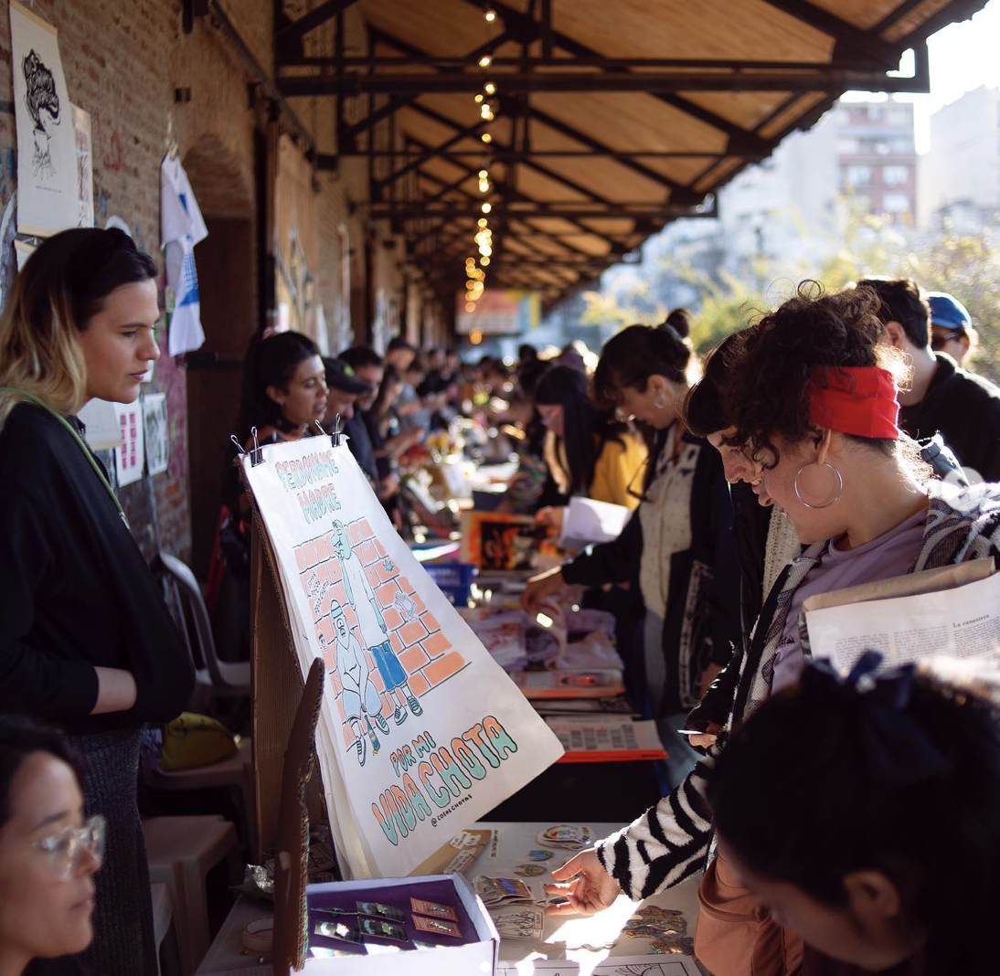
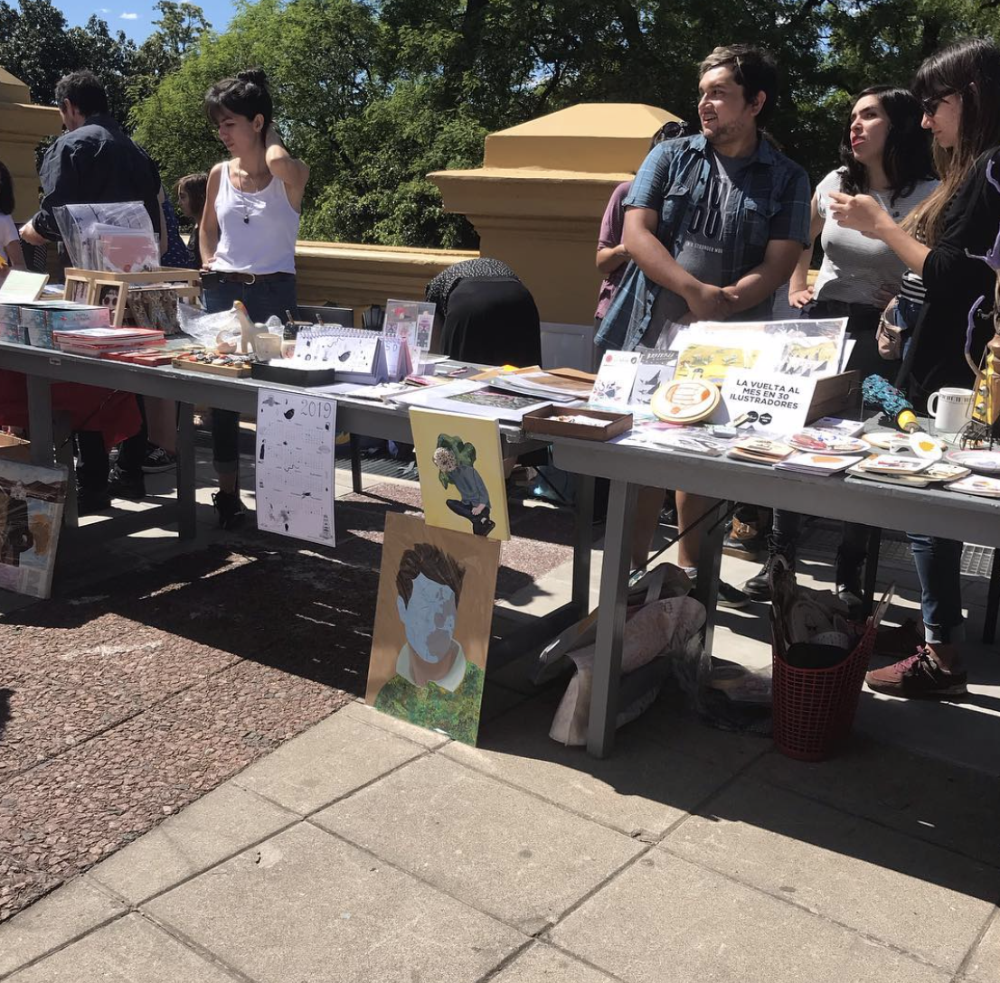
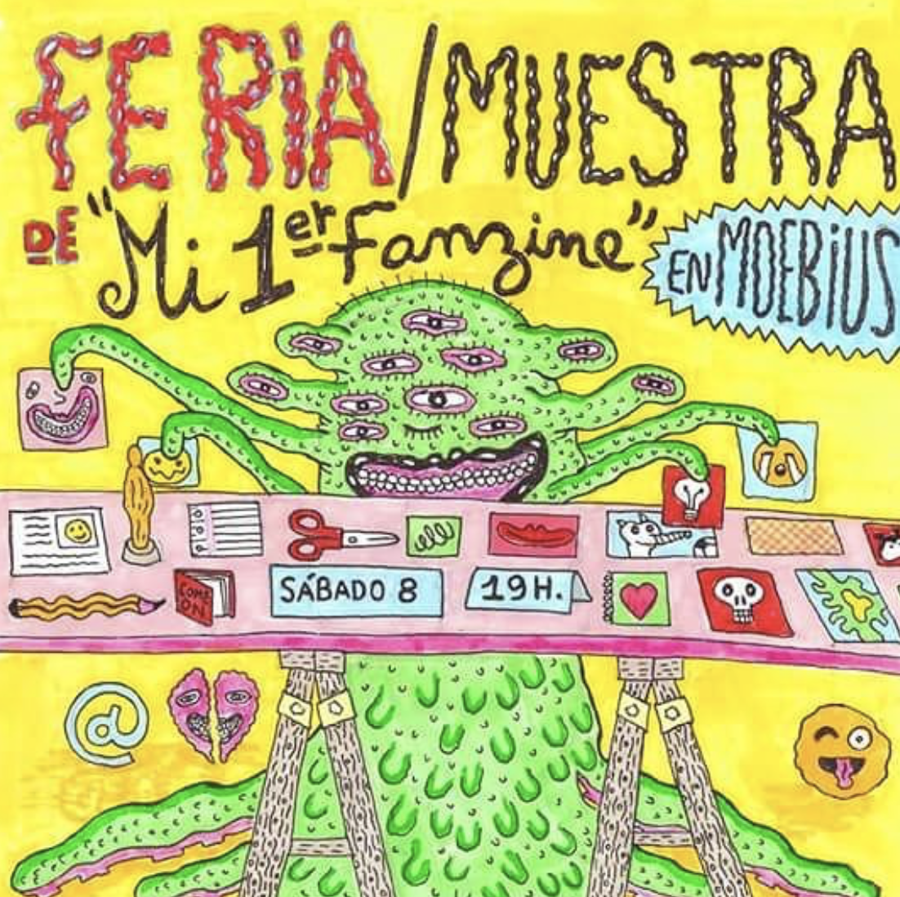
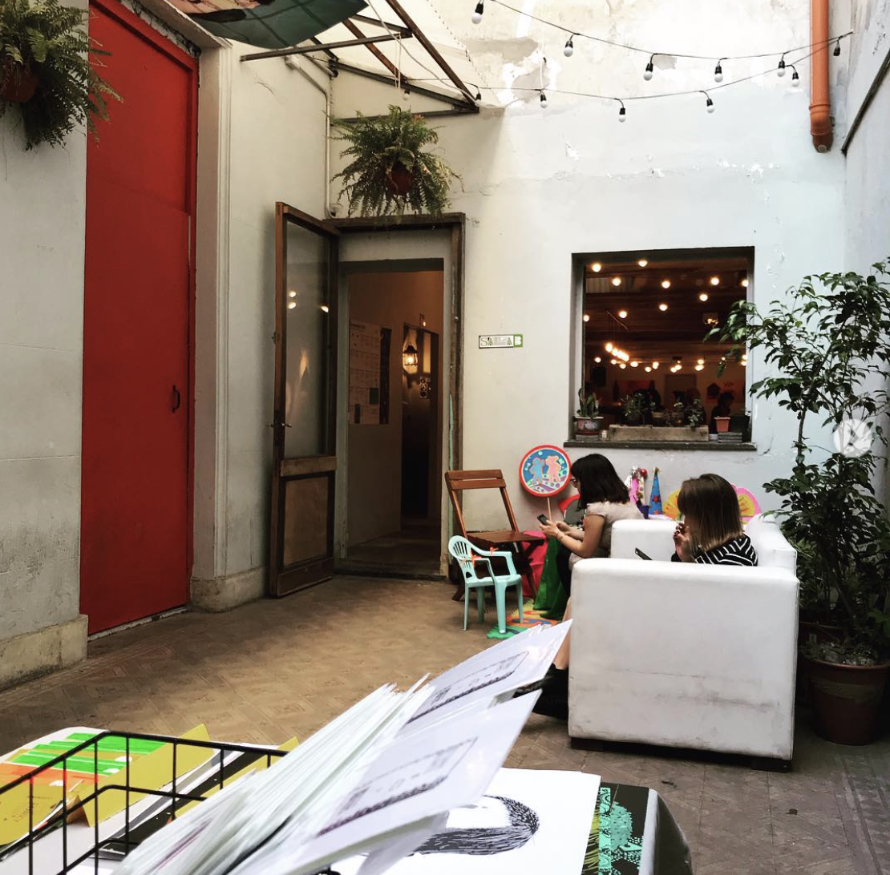
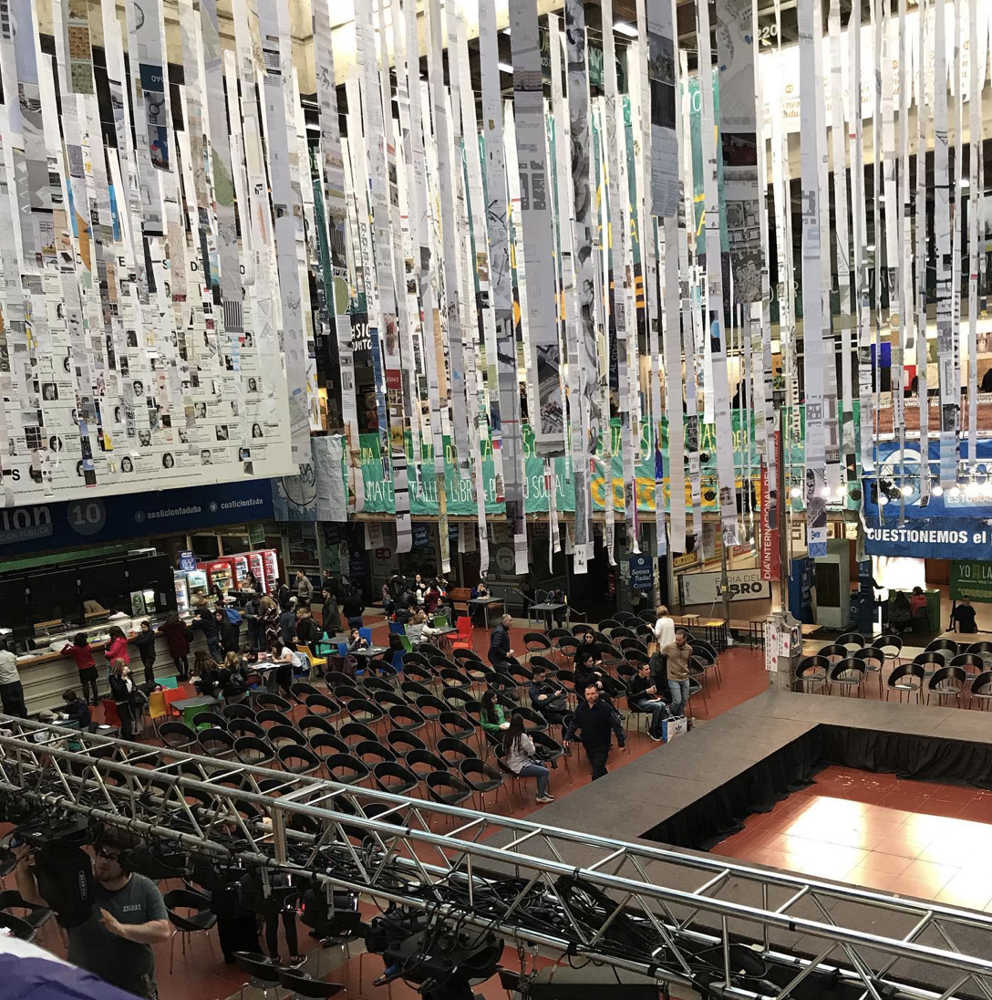
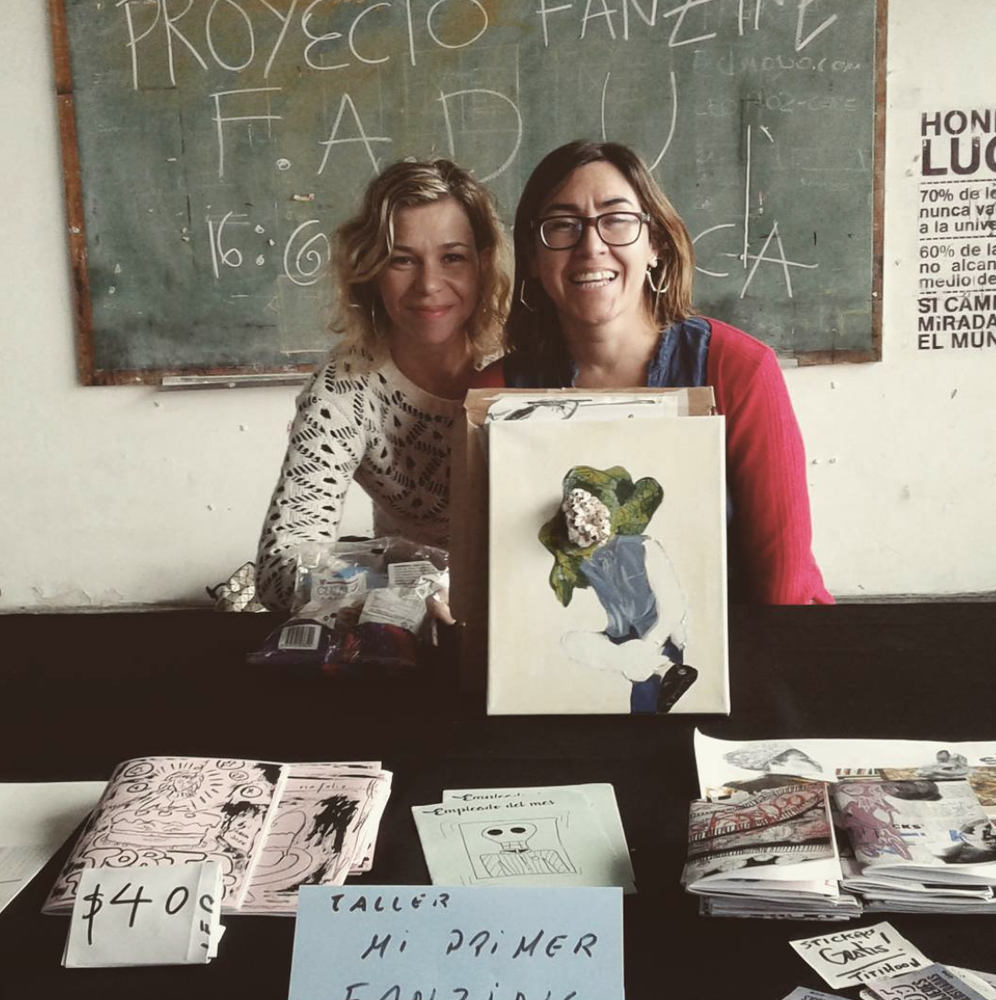
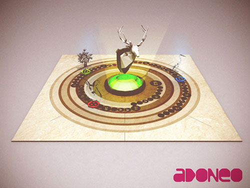
 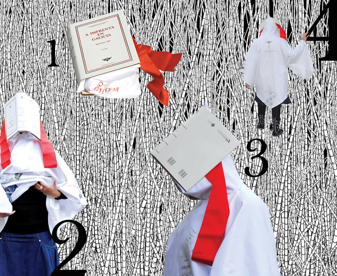
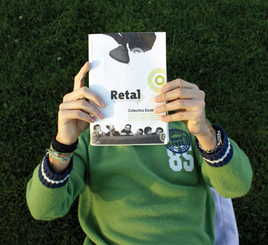
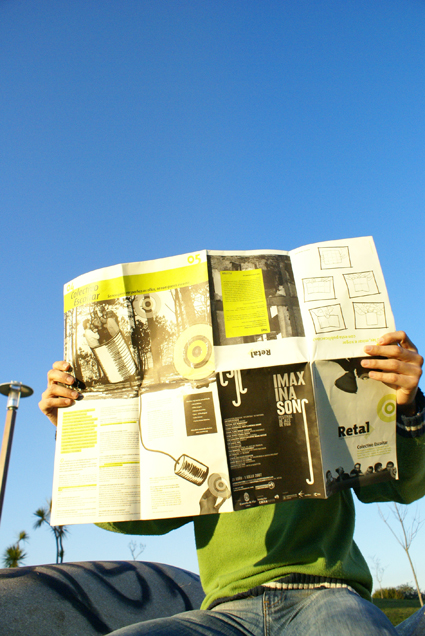
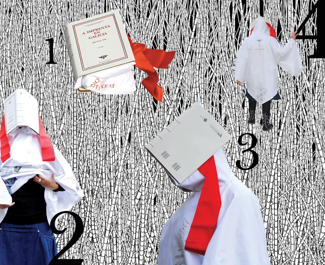
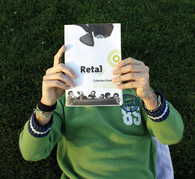
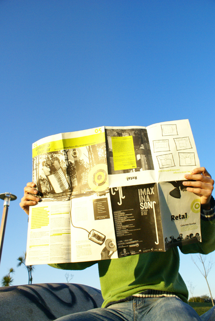

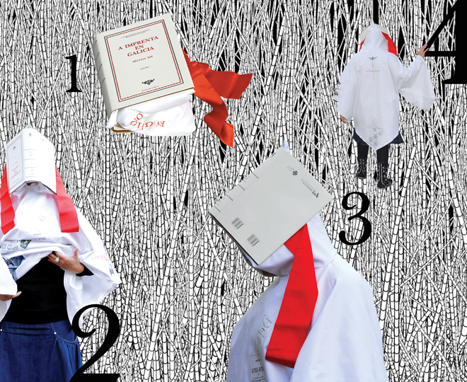
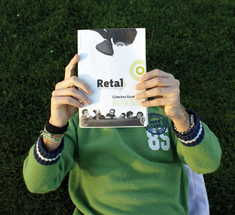
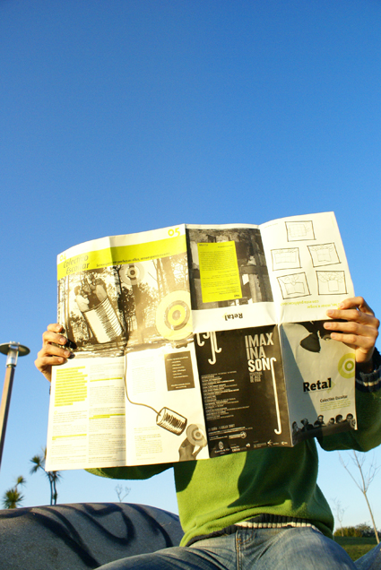
› Feria Migra marzo 2023, venta y exposición de fanzines y obra junto al colectivo Ramal Turdera.
2019. Ilustraciones en el libro de Anuario de Ilustradores. Juana Azurduy Editora, ISBN 978-987-26362-8-9, Noviembre 2019.
2018. Ilustraciones en el libro de Anuario de Ilustradores. Páginas 26 y 27. Juana Azurduy Editora, ISBN 978-987-26362-8-9, Septiembre 2018.
2017. Fanzine Sputnik artístico e experimental, con periodicidad esporádico.
› Feria en el Centro Cultural Recoleta , junto a la Cátedra Roldán de la FADU UBA, llevaron a cabo la jornada artística de “Retratón”. 17/11/2018, en los balcones terraza del CCR.
Participa como artista y feriante.
› Exposición de Fanzines en la Espacio Moebius, Caba, Agosto 2018 y Marzo 2017. Participa como feriante.
› Exposición Visual de Pinturas en la Sala de Exposiciones Osvaldo Scarfó, ESEA Lola Mora, Lugano. Julio, 2018.
› Exposición en Casa Correa, junto al colectivo Anuario de Ilustradores. Exposición de obras, feriante de obras y participación en el libro No13 del Anuario de Ilustradores. Diciembre, 2019.
› Exposición de Fanzines en la Bienal de Diseño, FADU, UBA, Abril 2017. Participo como feriante.
› Feria Migra 2009. Colabora en el MediaLab Prado, Madrid, junto al colectivo Adoneo, realicé gráfica para juegos virtuales de realidad aumentada.
› Exposición personal de un libro-objeto parte de la temática “En torno a la Baskerville”; la pieza fue expuesta durante 3 meses en el CGAC, Centro Gallego de Arte Contemporáneo, organizado por la DAG (Asociació de Deseñadores Gráfico de Galicia) en Santiago de Compostela, Galicia, España, 2008.
› 2006-07.Crea junto a un colectivo gallego, una Revista de Arte y actualidad contemporánea gallega, llamada Retal.
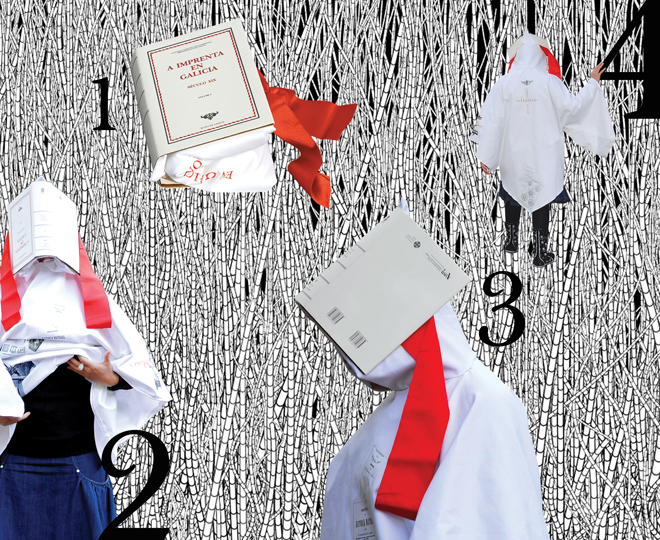
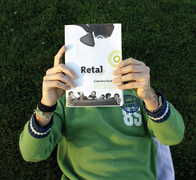
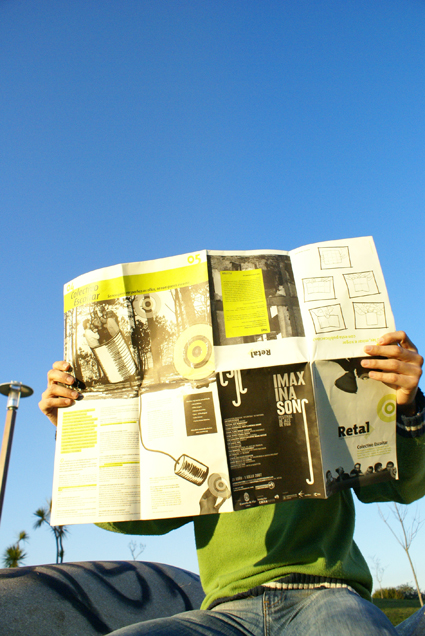